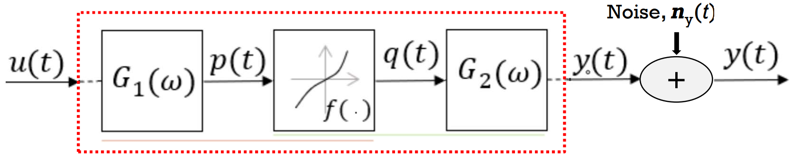
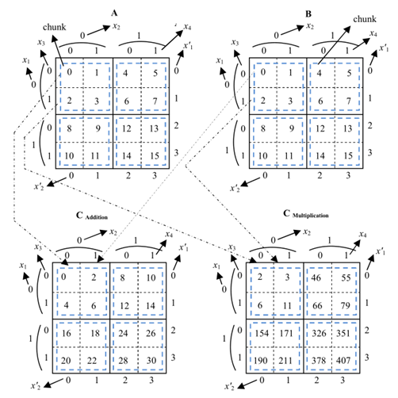

Abstract: Thesis proposes new techniques to minimize blood loss during surgical operation. It is done by the proper mathematical formulation of the bio-impedance on the electrosurgery data from Covidien Inc. The study hypothesized the underlying behavior as Wiener-Hammerstein (W-H) system. The computation time to identify the W-H system is minimized to a few minutes from several hours without any prior knowledge on Benchmark data. The good initial models are selected based on the Spearman correlation between internal signals of W-H system. But the performance of this technique is affected by the noise level. It can be recovered by a proposed variation of popular random forest technique.
Achievement: A popular python library ‘pydata’ is using above thesis to compute sparse multi-dimensional array as “This is stored in GCXS format, a generalization of the GCRS/GCCS formats from 'Efficient storage scheme for n-dimensional sparse array: GCRS/GCCS'”.